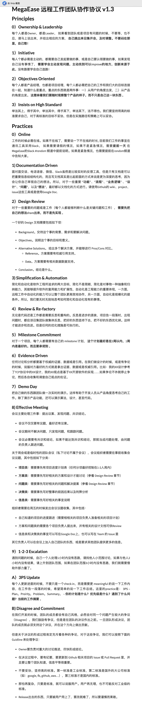

一月
我翻开历史一查，这历史没有年代，歪歪斜斜的每页上都写着’仁义道德’四个字。我横竖睡不着，仔细看了半夜，才从字缝里看出字来，满本都写着两个字是 “吃人”。
众所周知，中国抗击疫情的行动，自始至终都是公开透明的，第一时间采取有效措施，第一时间公开基因序列，并对很多国家及时伸出援助之手，可谓走在抗击疫情最前沿。英雄的中国武汉人民，自觉留在武汉隔离，作出了巨大的牺牲，保证了中国抗击疫情的胜利。
一 过春节
现在我坐在窗前，感觉人是那么的渺小。有一天你不在了，这个世界不会因为你的消失而有一点点改变，哭泣也罢，咆哮也罢。如同置身于外部，看地球上每一个人一样，根本看不懂。人，有的人就可以光芒万丈，有的人则淹没在浮沉之间。
二零一九年已经过去了，二零二零也快来了，这一年中，我也发生了很多的变化。最大的变化就是，从对生活没有规划，从现在开始对生活有一点点的自己在规划，找到了自己的方向。我其实很羡慕有些人，他们一出生或者是在很小的时候就知道自己之后自己要去干什么，去追求自己心中的目标。
又是一年春节，还是那么的无聊，除了上班就是下班，是否感觉生命没有了意义。发现随着年龄的长大，生活越来越没有意思，不再像小时候那样对应所有的事情都充满好奇与未知的新奇。喜欢跑，喜欢玩，不再那么单纯。就如同，现在的人看待春晚是一样的，再怎么样的表演人们都不会感觉到精彩。你是从三米后空翻也好，还是从五米后空翻也罢，最多就说这个人挺厉害的也就完了，而你背后的付出谁又想知道呢？人们的审美水平，已经超过了现在能够表演的范畴，除非你给人们展示大多数不知道的东西或者事物。而现在的春晚，基本都是靠几个小品来撑着的。如果没几个比较好的小品，还有多少人会看呢？最起码我家里的人，没人看了。
新年新气象，接下来就要多做有趣的事情。我现在基本都给自己的规划好了，尽量每个月都干一些不一样的事情，比如徒步走完整个西安城墙，比如给之前参加我婚礼的朋友邮寄礼物和新年祝福。现在想想，都是美好的回忆，谁不是呢？还有就是干好自己的本职工作，加油。
人生就是幸福与痛苦来回交替，只不过有的人幸福多一点，有的人痛苦多一点。多做有趣的事情，让自己变得有意思。我很感谢圆圆，让我又一次的开始思考自己，考虑我要走的路，应该去怎样生活。
二 武汉疫情
快过年那几天，我才知道武汉的疫情，也就是那几天才知道上街需要戴口罩了。幸好，我们在之前为了防雾霾的时候买了一大盒 3M 口罩，正好这个时候开始使用上了，不然上街买菜的话都没一个口罩。紧接着就是，基本在各大电商平台以及实体店多买不到合格的口罩了，就连消毒水以及消毒液都没有了。如果你想买个口罩给家里人用，都必须让国外的朋友或者同学给你代购，但是现在看来大多数都会压在海关，而且很多的快递都给你拆开了。
最可气的是，其实很早的时候政府已经知道了这次疫情的严重性了，但是并没有及时告知民众，导致疫情大规模爆发的时候人们才知道。可是知道的时候都已经控制不住了，最受难的就是，武汉以及黄冈的人们了。而且，比较可笑的是，当时候专业给外部公告的是，疫情可控可治。导致很多人都相信政府，从而出门不戴口罩，也不消毒，生活该怎么样就怎么样，该聚餐的就聚餐，从而导致疫情进一步的扩大。
可叹的是，我一月份中旬的时候还去了趟上海，出差。因为基本不使用也不看微博，所以一直到不知道这个事情。在上海出差的时候，也基本没有看到相关的新闻和报道，所以街上的人基本都没有戴口罩的。结果回来不到一周时间，结果疫情爆发了。幸亏当时候去上海没有动车车票了，不然如果当时坐火车再加上中转的话，可能我自己就会别传染。你说，可怕吗？病毒虽然可怕，但是闭塞的消息传达更加可怕。
疫情持续了一个多月，口罩变成必需品，所有人最想知道的都是：「哪里能买到口罩？」药店、商店不是限购就是脱销，很多人迫不得已转战到各种社交平台，和网友「拼购」口罩。然而让人气愤的是，不少人花了很多心力，结果发现自己买到的口罩，是假的。
疫情，是一面照妖镜。在微博热搜榜上，几乎每天都能看到关于假口罩的新闻，全国各地陆续有警方查获制售假冒伪劣防护物资的团伙。这些三无口罩、冒牌口罩，采用极劣质、廉价的原材料，竭尽所能的压缩成本，一转手就能赚回近 10 倍的暴利！有人义无反顾的驰援一线，也有人利欲熏心，借机发国难财。
这些假口罩，通过各种方式在网络上销售，甚至还出现在许多正规的药店里，被门口排着长队的普通人买回去，戴着它们去上班、给家人用作防护。这样的行为实在是令人唾弃！而最可恨的是，他们连捐往武汉的口罩也不放过。难道这些人就忍心看着我们的医护人员，靠这样的三无产品和病毒作斗争吗？
现在可好了，基本在家里不能出去，我爷爷已经在家里待了一个月了，每天最多就是在窗户口晒晒太阳而已。出小区也是需要登记，而且两天只能够派一个人出去采购生活必需品。现在知道害怕了，更何况我们这里还不是疫情的爆发地，可想而知。然而，对于这件事情的始作俑者，我只想说：万事终有报！
现在很多人起床的第一件事情就是，打开手机看看昨天又有多少人被确认了，多少人不在了，多少人治愈了。我们看到的只是数字，他们失去的是家人。我们都希望疫情能够早点结束，加油武汉，中国加油！
三 远程办公 参考来自《MEGAEASE 的远程工作文化》一文
[1] 宏观管理 - 努力找到好的人
团队管理的头等大事是找人，没有之一。很多人都会跟我说，你的这种远程团队需要很好的人。是的，没错，人很关键。远程团队需要的人的一般需要有这些特质：
- 能独挡一面的人
- 这样交给他的事能独立完成，没有路能自己找路，这样可以省很多管理成本。
- 沟通能力很强的人
- 一方面，他们把模糊的事能变清楚，另一方面，他能有效地说服他人。不然就会非常扯皮和消耗时间。
- 能自管理和自驱动
- 不能自管理和自驱的人，会增加大量的管理和教育成本。能自驱动的人，都是对负责的事情有认同的人。
如果你仔细思考一下，你会发现，这样的人是任何一家公司所渴望的人，和远不远程无关。只不过，如果是远程团队的话，你会被逼着要招到这样的人。
招到这样的人，你团队的执行力会非常的强悍。招不到这样的人，你只能为他们不能自管理和自驱而招”经理”，不能写出好的代码而招”测试”，不能很好的沟通而招个”项目经理”，不能独档一面，而要把好的人安排给他们当”教练”，而好的人则会被累死……
这个时候，你就需要计算一下了，是花时间精力在教育不好的人，还是花时间精力找好的人？无论远不远程，聪明的管理者都会选择后者。这也就是为什么 Amazon 的 Bezos 会说，“我宁愿面 50 个人一个人都招不到，我也不愿意降低我的面试标准”。
[2] 宏观管理 - 设定共同的目标和使命
对于远程团队来说因为见不到面，所以，缺乏交流和沟通。所以，需要团队里所有人能在同一点上，能够对要做的事有一个统一标准的认识。也就是共同的目标和使命的认知。知道要要什么，不要什么。知道取舍，知道 trade-off。这些东西都是需要团队一起达成的共识。如果没有这样的”Same Picture”的目标和使命，就会出现很多不必要的误解和冲突。另外，因为团队和业务也在迅速发展中，所以，也需要不断地调整和沟通。这都需要领导者花费时间统一目标和使命。
老实说，无论远程不远程，一个团队也是需要有共同的目标和使命的。没有共同的目标，就算是集中在一起办公，也一样没有效率的。
[3] 宏观管理 - 倾向使用小团队
因为沟通成本的问题，远程团队更为倾向使用小团队，但并不是说小团队会限制整个公司的规模。《人月神话》说过，只有小团队才能驾驭复杂的系统。Amazon 的 Two Pizza Team 的文化（团队的大小只能到两张披萨就能喂饱的大小），就是把整个系统拆成”微服务”架构，这样可以导致整体效率的巨大提升。表现在，可以并行开发，专注于一个功能更利于解决复杂问题，简单可以更容易的运维，可以更容易的规模化……
我工作的这 20 多年来经历过很多公司，尤其是创业的这几年来，看过的公司更多了（50+以上了），我发现，人数越多的团队，基本上来说，就更偏劳动密集型。劳动密集型的一个特征就是，大家整天在想，得整点什么事给这么多人，好让他们忙起来。而人数少的团队，因为人不够，所以每天都在想，什么样的事更重要，什么样的事可以自动化，怎么做更有效率……小团队和大团队的关注点就这么不一样了，所以做出来的事也就不一样了……
[4] 微观实践 - 远程工作团队协作协议
文档驱动
- 首先，远程的问题就是沟通不方便了，集中化的办公一群人可以在白板上进行讨论，然后远程工作这个事就变成很复杂了。所以，当要讨论什么事的时候，需要发起人先写一个文档，然后大家在这个文档上进行讨论（我们通常使用 Github 的 issue，Pull Request 或 Google Doc）。另外，写文档的好处太多了，除了给后人有一个可以追溯的东西，更重要的是，写作是一种深度思考，当你把你脑子里想的东西写下来的时候，你就会发现你的思考更多了。所以，文档驱动我们团队能力非常重要的事。
自动化和简化
- 自动化和简化是我平时追得最多的东西了，从软件的 Unit Test, Functional Test, Performance Test 一直到用 Kubernetes 进行自动化部署，我要求的就是从一提交完代码后就自动化的上线。我们玩的是 Amazon 的”单分支”代码管理的玩法，一旦代码 merge 上 master，就会直接上线（当然需要通过灰度）。因为远程团队如果没有自动化的工具，那么，就会导致整体效率的下降。
Owner 文化
- 这个太重要的了，但是，这并不是在说，如果一个事没有 owner，就会像”三个和尚”那样，事情就进了没人管的地步。这是因为很多人在工作中都是比较 nice 的，比较 nice 的人通常来说都不好意思跳出来对别人发号施令。所以，Owner 文化就是要求每件事都要定义一个 Owner，而这个 Owner 是有权对其它人发号施令的，其他人也有义务要配合他。当然，Owner 的权利越大，责任也会越大！
Review 文化
- Review 文档是一种把知识或是想法传递出去的方式。我们在实践过程中，需要大家把好的想法写下来，这需要包括问题背景、目标、可选的方案（这些方案需要有引用和数据，不能是拍脑袋）、还需要有 Pros/Cons 的比较。然后再发起讨论。这样，事情在一开始就做好，那么就可以让大家的讨论更加地有效率。很多人以为开会讨论有个议题就行了，其实不够，有效率的开会讨论需要的是议案，而且还是高质量的议案！
目标承诺
- 我们需要每个人承诺自己的工作目标，这个完全由每个个体来发起、完成。一般来说，每个人自己给自己制定的计划最好是在 1-2 周内。
自我管理
- 我们的实践是没有审批制度，无论是，休假、报销、出差，完全是自己自由安排，但需要告诉团队（除非在一些关键时期没法休长假，需要整个团队全力以赴），但千万不要撒谎和作弊，一旦发现，直接开除就好了。这个是基于好人更多的原则制定的（没有必要为了少数的坏人一刀切后让所有人痛苦）。
闲聊和自行见面
- 见面和不能见面是一件非常不一样的事，在一起工作时，人和人是会有感情的，因为会有闲聊。远程的时候，则只有工作了。所以，我们鼓励团队人员间的私聊，闲聊，互相对方讲讲自己的经历和过往，同时，也鼓励员工自行出差到对方的城市见见跟你一起工作的人，公司报销差旅费。
知识分享会
- 我们每周都有知识分享会，一次只讲半个小时，不贪多，就讲一个小的知识点。然后，团队中的一些人还主动使用 Google Form 来收集分享的反馈信息。
就地奖励文化
- 我们默认上是没有年终奖，只有就地奖励文化。也就是说，你做的事挣钱了，利润中有 70%公司拿走，剩下的 30%团队的人就地分掉。这样会让团队里的每个人都会想怎么挣钱，除了可以把精力放到那些能够让用户付费的地方上，更重要的是让团队成员了解一下业务和用户为什么要付费，这个是非常关键的。当然，如果公司没有挣钱，但是员工工作的不错，我们还是会给年终奖的。不挣钱的主要责任是我的，而挣钱的主要功劳是团队的。
外包支持性的工作
- 一些支持性的工作尽可能地使用外包，比如：HR、行政、发工资财务、员工持股、测试人员、定制化开发……这样可以让你的团队更小，更高内聚。更利于远程。
异步编程
- 如果一个项目是从零开始的，对于一个团队来说可能会是无从下手的，这需要有个人（owner）把代码的框架和结构给组织好。然后其他的人进入把坑填了，这样的效率会高很多。另外，不见面的结对编程，完全可以使用异步的方式进行，这其实就是多人干同一个 pull request 的方式。有 Github 这样的协议工作，远程编码变得很方便。

四 新年计划
我在之前的文章中给自己写过一篇文章，题目是《自律的人更自由》。写这篇文章的目的其实是想告诉自己，让自己懂得什么是自律，什么又是自由。在约束自己的同时，也不那么封闭自己。但是，现在的结果告诉我，我还是没有把握好之间的度，弄的自己的生活有点糟糕。
二零一九年，我给自己定了好几次计划，规划好了每一天在什么时间应该干什么。但是，好景不长，过不了多久，之前的计划就很难实行不下去了。有的是因为自己的懒惰，有的是因为加班，导致之前定制好的计划很容易泡汤了。再就是，定制计划以来，部分情况是因为定制的计划，远远超出了自己预计时间。低估了一件事情，需要花费的时间。
以写博客和学习了解一个新技术为例，写一片博客之前，我自己估计可能需要话费半个小时到一个小时就可以完成，但是实际发现真的深不可测。一方面需要查阅很多文章博客和资料再进行整理，一方面需要自己的组织能力将多个要点进行梳理和归纳整理。所以写一篇博客可能需要花费之前预计时间的数倍。同样，学习新技术也是同样的道理。
这很大程度上能够反映出自己眼高手低的实质问题，很多事情我们认为是这个样子，对事情进行一番彻底的思考之后，发现其实并不是我们想象的样子。从而导致定制计划的时候就会出现问题，这样导致计划的落空，然而计划的落空往往会让自己陷入一种自责和懊悔的情绪之中。这种情绪，对于生活和学习，往往是一种负反馈。
- 开发你自己会用到的东西；
- 保持一个稳定可以运行的版本；
- 写好测试，用好自动化，无聊的工作只做一次；
- 多读源码，去修复别人的问题；
- Focus on your work！
- 快乐最重要；
二月
我们不要一味的追求完美主义，它会带给我们压力，也不利于身心健康。但是，一点都不追求完美，生活将愈发的颓废。
2019 冠状病毒病大流行导致许多人呆在家里，社交和锻炼大为减少。这会对你的身心健康产生负面影响。
一 世界和平
我希望世界和平，没有战乱，也没有不公平。然而什么才是和平呢？有人说和平可以把这个和字拆分开，禾就是每个人有粮食吃，口则是每个人可以自己的讲话，这就是和平。八天前，李文亮医生新冠去世了，一时间引起了轩然大波。不仅仅是很多人在各种社交媒体上面评价和追悼，政府也开始成立调查小组。其实，我在里说这件事情，不想去批评和评论谁对谁错。一时我感觉自己并没有资格，再者说谁对谁错也不是我一个人可以左右的，毕竟人都不在了。我想要悼念，在这次武汉疫情中，无辜去世的普通人，愿天堂没有痛苦。R.I.P. 一路好走！
二 急性胃肠炎
前天晚上迷迷糊糊醒来，圆圆说自己胃不太舒服，然后和我有一句没一句的说话。说着说着，我就开始浑身发冷，开始打颤。紧接着，在被窝里面整个身体都在打哆嗦，牙齿止不住的噔噔作响。我心里一直想抑制自己这样，但是身体根本不听使唤。全身都在战栗，我知道自己的立毛肌在不断地收缩，为自己供暖。
圆圆发现我不太对劲，就过来看我，但是我根本没有办法和她说一句完整的话。因为打颤导致我说话都是哆哆嗦嗦的，十足像一个口吃严重的患者。我让她抱着我，这样我稍稍感觉自己的身体不在那里使力的用劲了。可能是由于这种压迫感，让我可以感觉到一种温暖。
因为圆圆前段时间发过一烧，还比较严重，所以她很清楚，我这样就是发烧的并发症状。所以，紧接着给我量了体温，一边给我做缓解。温度出来了，39.2 度！我记得我重来没有发过这么高的烧，实在是非常难受。圆圆，看着我这样不行，就去找退烧的和消炎的药给我吃。在我们的药箱里面没有对应的药，就连最起码的阿司匹林都没有。后来，从我妈哪里找个一板阿司匹林过来。颤颤巍巍的起身，吃了药。
没过一会儿，我的头就非常的不对劲，就好像是失血过多一样，或者抽血的时候扎错了针一样，头非常的晕，瞬间就要想吐。圆圆看着我难受，赶紧递给了我垃圾桶，顺势我就开始呕吐。吐过的人都知道，一旦开始吐了，非得吐个稀里哗啦不行，不然根本别想止住。吐的时候非常难受，真的，眼泪都开始花花的往下流。
终于吐完了，把晚饭的凉皮都吐了。心里想着，是不是因为吃的太多了，而且皮子太硬了，导致的肠胃炎呢？因为疫情这个特殊的原因导致小区无法正常出去，现在这情况根本没有办法去医院就诊，可能出去了就回不来了。可想而知，人们现在已经意识到了疫情的可怕，三人成虎。再者说，我想去估计也是走不动路。
就这样，慢慢的躺到了被窝。吐过了，身体不再那么难受了，但是还是高烧不退。圆圆找到了之前她发烧时候使用的退烧贴，给我贴到了头上，瞬间好冰呀！我就害怕，不会把我激了吧，当时也管不了那么多了。后来浑身开始盗汗，真的就是那种在蒸拿房的那种感觉，身上的汗水一波一波的往下流，感觉被子都快打湿了。就这样，跌跌撞撞的熬了一晚上。
到了早上醒来，身体还是非常的不舒服，还是不断地盗汗，但是不至于自己无法承受。到了 9 点多，也吃进去太多的东西，圆圆给我少了点稀糊糊，我吃了一小碗，又躺下了。11 点了，我妈和圆圆都认为需要去医院看看，一个是为了放心，再者就是害怕我是新冠就危险了。反正，费了些劲，老爸开始带着我去了高新的一个三甲医院。
到了医院门口，我明显能够感觉到我自己走路还不是太稳，感觉轻飘飘的。在门口排队量了体温，大致说了下我自己的症状和情况，直接让我去了旁边临时板房搭建的普通发热门诊。在门口等了好一会儿，测了体温、看了医生、交了钱、拍了肺部 CT，才确认了我不是新冠，说是可能是呼吸道感染或者急性肠胃炎。让我去急诊再去看，是开药还是打针。到了急诊，又让医生给我看了看，看了些药回家了。下午 5 点多了到家了，还没吃药呢，我也退烧了。
其实我想说的是，只是我自己看到的或者听的一些事情。我看到了，医院的医生和护士非常的心苦，再这样严重的疫情下，她们还坚持上班，做逆行者，我真的非常的感动。穿着防火服、口罩、护目镜、手套、脚套、头套，在这样的环境下还要一天天的上班。幸好我们这里不是疫情最终的地区，不然会更新的沉重。武汉加油，中国不哭！
我听到了，医生和护士交谈中，知道了现在疫情确实挺严重，和我网上看到的一致。现在已经不分，疫情重灾区和非重灾区了，因为都是重灾区，外省回来的都需要隔离。她自己今天接诊了十几个人，7 个都要求被隔离。而且今天接诊了一个病人，之前开过药且没有检测过来有新冠的症状。但是今天来了说效果比较好但是吃完了，需要再开点药，她就让去了急诊。结果在急诊别发现病人是从外地回来了，然后急诊的主任跑过来疯狂的埋怨，其实这是病人故意掩码的，她也表示无奈。我都害怕这样的情况了，护士说我也害怕。
三 以梦为马
记得在梦里梦见老师正在给我们上课，讲的是数学的练习题上面最后的几个大题的解法。我不知道为什么自己没有写，而且很多同学都没有写，而且很清楚的记得马超还在不停地抄其他同学的作业。幸好，老师没有检查作业，所幸我也就这样一边听讲一边记笔记。
不知道为什么，这时候有很多同学在教室里交头接耳，声音比较大。抬头一看，给我们讲课原来是韩红老师，是的就是那个演唱《青藏高原》的韩红，而且我却并不感觉到意外，如同普通的以为师长而已。这时，刘兴旺也没有好好在听讲，而是背着板凳坐着，和后面的同学在聊天，嘻嘻哈哈之间，声音好像扩散、响彻整个教室了。就在这个时候，韩红老师看着他，也没有生气，他则是默默的低下了头不敢直视老师的眼神，安安静静的坐在了自己的座位上。
老师好像一点儿都没有生气的意思，背过身，在黑板上面一笔一划的开始作画。简单的几笔勾勒出来了一座座山峰，两条斜着的直线用来当做道路，直插山峰而去消失在山的那边，而山下则是一片清澈透明的湖水。正好这个时候，太阳照射到了黑板上面，我看着这一波湖水开始泛起了波澜，仿佛真的置身于这一幅画里面，站在湖岸边看到了波光粼粼闪耀着的湖水。这时，老师给我们讲这个叫做”伊索诺普勒效应”。正是因为光的流动，产生了光影的变化，出现了亮斑，所以有人可以看到了湖水的波光，而有人却看不到。真如同你们一样，有的人可能感觉我讲的并不重要，所以自己不需要听讲。不由自主的，我鼓掌了，好像只有我一个人在鼓掌，很多人拿出了手机在拍照。
说巧也是巧，恰恰这个时候，有人的手机里面传出了播放电视剧的声音。后头一看，原来是崔洁戴着耳机在看电视剧，恰巧这个时候耳机接口给掉了，声音传了出来。很意外的是，韩红老师还是没有一点儿生气的意思，说道。就好像我现在教小学生唱歌一样，很容易，大家都会按照我教的那样一句句的跟着我唱。但是如果我教一批歌手唱歌就不是这样的样子了，因为每一句他们都会有自己不同的理解。我这样唱，可能他们并不认同，非要那么唱一样。可能我讲的，你们认为这并不重要。
突然，我醒来了。
三月
遗忘该遗忘的烦恼，记住该记住的美好!
所谓番茄工作法就是一种时间管理方法，在 1980 年代由 Francesco Cirillo 创立。该时间工作方法使用一个定时器来分割出一个一般为 25 分钟的工作时间和 5 分钟的休息时间，而那些时间段被称为 pomodoros，为意大利语单词 pomodoro 之复数。
一 计划赶不上变化
每到年初和年末的时候，朋友圈总是会有很多人发表自己，关于新年的计划以及对应去年计划未完成而感到遗憾。当然我也算其中一个吧，只不过我不发朋友圈而已。每到年末的时候，我也会给自己定一个今年需要完成的计划列表。基本都三大类，每一类置顶三个目标，总共九个任务。基本都是通过一段时间的坚持，就可以很好实现任务。
这样定制，也是因为之前总结计划和执行的时候，发现了一些问题改进而来的。比如跨度太长的任务，很难让人坚持下去；难度很大的任务，需要分割开来，单独完成，而非制定一个大计划；制定大计划，没有完成，到头来徒增烦恼而已，等等。所以定制任务还是需要良好的总结和归纳，以及发现现有的问题，及时改正的。
计划赶不上变化，对我而言，确实也是比较费时费时间的一个问题，我也没有找到比较好的解决方法！
二 小番茄大世界
对应于上一个问题，我找到了一个可以有效地解决方法，那就是使用番茄时钟工作法。我在三月中期的时候，接触到了 “微软 Todo” 这个 APP 程序。我主要是使用它来帮助我，记录今天需要完成的待办事项。而且可以设置显示顺序。这样，我每天起床之后，对今天需要完成的任务和事情进行简要的记录，在工作的时候按照紧急和重要程度进行时间上的安排，及时完成重点内容，完成之后勾选 ☑️ 则开始下一个任务。
虽然看上去还是比较好的，但是操作的时候，还是有一个严重的问题，就是很难集中精力，而且长时间的操作很容易让人工作疲劳，影响工作的效率。所以，我想找找有没有提高工作效率相关的书籍或者方法可以借鉴呢？最后，抽了零散的两天时间，把《番茄工作法》给看了两遍。看了之后，顿时感觉到茅塞顿开，感觉非常好 👍，讲的非常有道理。详细的要点和知识汇总，我也在自己的博客里面总结和归纳了，有兴趣的同学可以去看看——《番茄工作法摘录》。
- 一个番茄时间包括
25分钟的工作时间和5分钟的休息时间。 - 每完成
4个番茄时间，休息15到30分钟。 - 一个番茄时间不可分割，没有所谓的半个番茄时间或四分之一个番茄时间。
- 一个番茄时间必须有始有终。
- 如果一个番茄时间被不断中断，则该番茄时间作废。
- 如果在一个番茄时间没结束就完成了任务，请检查、回顾任务，直到定时器响起。
- 保护番茄工作法，及时告知对方，迅速协商、重新安排中断事件并按照协商时间回复来找你的人。
- 如果任务预计要花超过
5到7个番茄工作时间，将它分解开来，将复杂的任务分解成几个小任务。 - 如果任务预计所花时间不够一个番茄工作时间，把他们累积起来。
- 结果是一个又一个番茄时间的积累。
- 时间表总是优先于番茄时间。
- 一个小队，一个番茄时间。
- 下一个番茄时间会更顺利。
工欲善其事必先利其器，所以我在网上找了很多，类似番茄时钟的 APP 程序。使用很多，也踩了很多坑，最后选择了“小番茄”。真的，很好用。免费试用三天高级功能，然后可以进行年订阅和永久解锁 🔓 高级功能。当然，我试用了三天之后，直接购买了永久版。


三 再谈远程办公
一直想说说，远程办公这个问题。因为新型冠状病毒肺炎的蔓延，所以很多公司都开始使用了远程办公。主要还是针对于互联网 IT 行业为主，只需要手边有电脑，既可上班工作。区别就在于工作地点的不一致，一个是在公司，一个是在家里。远程办公，公司领导很难完全掌握每一个员工的工作状态和工作进度，这样可能会导致效率低下，并且很多公司开始出现了大批量的裁员行为，从而减少过多的开销和公司人员架构的调整。
在远程办公开始被很多公司被迫接受的时候，网上出现了很多关于远程办公的好处、优化等等的评论和文章。说远程办公就是非常完美的工作方式，很多公司都应该变成日常工作方式；疫情结束之后，远程办公肯定变得很流行；远程办公可以节省工作的租金成本和工作效率，等等，等等。
之前 coolshell 的博主耗子叔也写过一篇关于远程办公的相关文章，就是《MEGAEASE 的远程工作文化》这个。主要是讲了它自己创业 MegaEase 公司的远程办公工作方式总结和执行方式。里面确实也有很多干货，我看了好几遍，而且还做了相关精要的笔记。有兴趣的同学，可以看看我之前写的文章《2020 年 01 月月度总结》关于远程办公的片段。
适合远程办公的公司，是有先决条件的，并不适合每一个公司。如果非要使用，效果可能会事倍功半。而我认为这些先决条件是非常严格，只有这样严格要求，才能够让团队效率倍增，屡建奇功。
- 努力找到好的人
- 能独挡一面的人
- 沟通能力很强的人
- 能自管理和自驱动
- 设定共同的目标和使命
- 因为见不到面，所以缺乏交流和沟通
- 所有人能在同一篇上，能够对要做的事有一个统一标准的认识
- 倾向使用小团队
- 因为沟通成本的问题，远程团队更为倾向使用小团队
- 但并不是说小团队会限制整个公司的规模
- 只有小团队才能驾驭复杂的系统
- 人数越多的团队，基本上来说，就更偏劳动密集型
- 远程工作团队协作协议
- 文档驱动
- 自动化和简化
- Owner 文化
- Review 文化
- 目标承诺
- 自我管理
- 异步编程
- 知识分享会
最后我引用文末的总结：远程工作并不是目的，但是远程工作会逼迫管理者面对管理的本质问题。远程工作趋向于找到优秀自驱的人才，守护团队的共同目标，并打造精悍高能的团队，并要求我们在需要沟通和协作的地方使用更为科学和有效的手段，在各个环节中提升工作效率，降低组织内耗……你的团队管理模型是否最优，在远程工作下就会一览无余！远程工作只是一个手段，提升管理水平才是真正的目的！
三 新冠疫情的情况
到三月底，基本上中国国内的疫情基本控制住了，很多省市都已经降低了卫生防御系数，越来越多的病人开始出院。但是，疫情还并没有结束，很多境外输入还在与日俱增。加之，国外的很多国家都大规模的爆发的疫情，尤为严重的是，美国 🇺🇸、意大利 🇮🇹、英国 🇬🇧。下面就是 Telegram 官方发布的患病治疗流程，很是形象生动：
- 🦠, 🤒, 😷, 🤕, 🤧, 🤢, 🤮, 🧼, 💉, 💊 or 🚑
在疫情的初期，很多人都认为中国的防疫很不到位，没有及时上报疫情情况导致疫情大规模的爆发、爆发之后没有有效的手段抑制，导致很多地区都开始的传播。但是，你现在在看看国外，美国也出现了很多和中国一样的情况。在中国爆发疫情的时候，美国人都认为不会传播到自己国家，及时疫情爆发的时候，还是有很多人不戴口罩。果然，特朗普是第一个用推特来管理国家的总统！我并不是说中国做的有多好，但是比较起来美国做的更差。
人的生命和自由在我们的诗歌声和咱们声中，被不断地扩大，导致很多人都认为人的生命是不可以冒犯的，人的自由是神圣不可侵犯的。但是，面对疫情和自然灾害的时候，才意识到只是无比的荒谬。我们做的，只能是保护好自己和家人，尽量减少伤害。灾难只有发生在自己身上，才知道有多害怕！